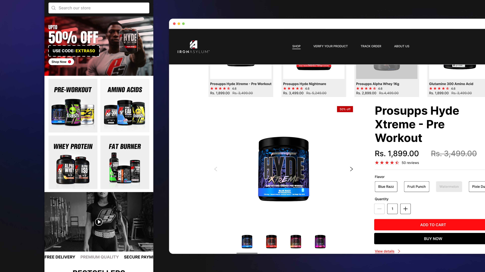
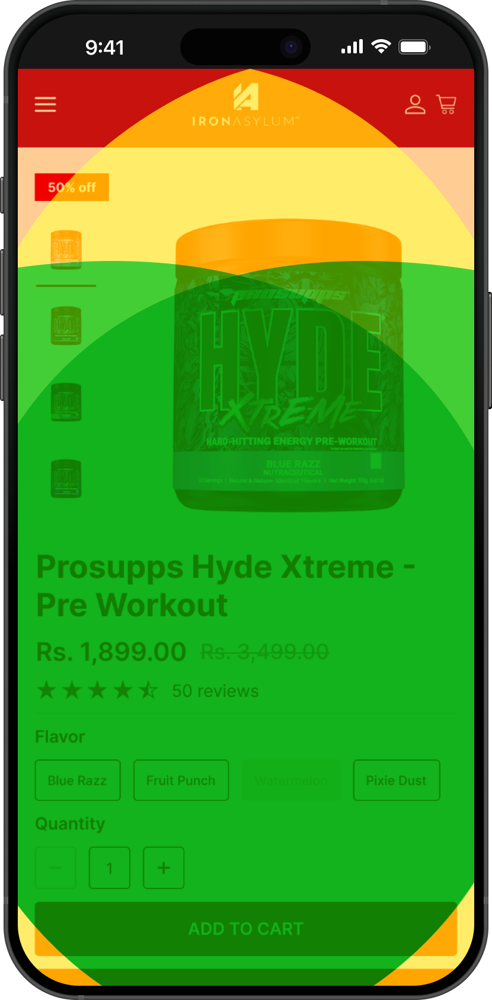

E-commerce • Live
Designing an E-Commerce Experience for a Sports Nutrition Brand

Overview
This project was part of my work at a startup in the fitness and supplements space, offering products like pre-workout, whey protein, and amino acids.
Most e-commerce experiences in this category rely heavily on aggressive visuals and promotional noise, often at the cost of clarity. Products look similar, information is hard to scan, and trust-building elements are easy to miss.
The goal was to create an experience that helps users quickly understand what a product does, evaluate if it fits their needs, and move toward purchase without friction.
Framing the Problem Space
Designing from scratch meant defining what a good experience in this category should look like.
Through reviewing existing sports nutrition websites and common e-commerce patterns, a few consistent issues stood out:
• Heavy reliance on visual intensity over usability
• Poor differentiation between similar products
• Information structured for display, not decision-making
• Trust signals not aligned with user hesitation points
This highlighted a gap, that, while users come in with clear intent, the experience often makes decision-making harder than it needs to be.
DEFINING THE CHALLENGE
How might we design an experience that supports fast, confident decision-making, while still reflecting a bold and high-energy brand identity?
Design Principles
Clarity over intensity
The interface prioritizes structure, readability, and hierarchy over visual noise to make information easy to process and understand at a glance.
Designed for scanning
Users don't go through product pages linearly. Key information is surfaced in a way that can be quickly understood without requiring deep reading.
Trust at the moment of hesitation
Instead of grouping trust elements in one place, cues like product details and reviews are placed exactly where users tend to question their decision.
Reduce distance to action
Users often arrive with a specific goal. The experience minimizes steps between intent and purchase, keeping key actions easily accessible.
Designing for Mobile Behavior
According to research, around 84% of purchases in this category happen on mobile, where speed and reachability directly affect conversion.
The interface was designed to support one-handed use, keeping key actions, and interactions within the natural thumb zone.

Guided Experience Walkthrough
- Entry & Discovery Clear navigation and early category cues help users quickly find a starting point
- Browsing Products Filters and structured product cards enable fast comparison across similar products
- Fast Purchase with Quick Buy Users can preview key details and take action instantly without leaving the listing page, reducing friction
- Product Deep Dive A detailed view supports deeper evaluation for users who need more information
- Checkout & Confirmation A streamlined flow captures essential details and enables quick, frictionless purchase completion
Decision Moments
Landing → Where do users start?
-
Users often arrive with a goal but no clear starting point. The homepage needed to guide them without overwhelming them:
- Navigation surfaces both shopping and utility actions such as tracking and product verification
- Product categories are introduced early to anchor exploration
- Visual sections support brand identity without interrupting flow
Browsing → What’s right for users?
-
Once users begin exploring, speed and comparison become critical.
- A quick-buy interaction (on desktop) allows users to take action without leaving the listing page
- Product cards highlight essential information for quick evaluation
- Filters and sorting help narrow down options quickly
Decision → Are users confident enough to buy?
-
At this stage, users are no longer browsing, they are deciding. The goal here was to reduce hesitation and support confident decision-making. The experience focuses on answering these key questions:
- What does this product do?
- Is it right for their goals?
- Can they trust it?
Action → Move to checkout
-
Once a decision is made, the focus shifts to speed, clarity, and minimal friction.
- “Buy now” provides a direct path for high-intent users
- Checkout captures only essential information
- Cart allows quick edits without disrupting flow
- A lightweight confirmation interaction completes the journey
Key Takeaway
One of the biggest learnings from this project was how quickly users want to move from intent to action in e-commerce. They usually come in with a goal and want to make a decision quickly.
Designing for that meant focusing less on showcasing and more on helping them decide, even if that meant removing things that didn't directly support that goal.